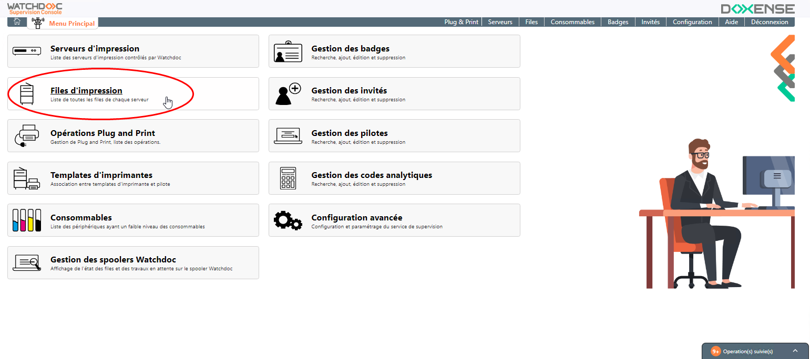
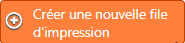
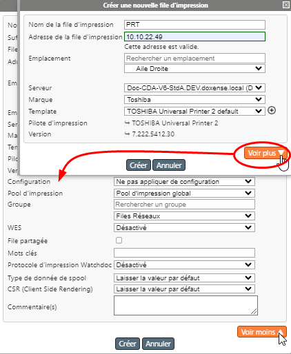

Principe
Lors de l'ajout d'un pilote d'impression dans WSC, un Template d'imprimantes est créé.
Ce template, est un modèle à partir duquel vous pouvez créer une file d'impression.
Accéder à l'interface de création de files
-
Depuis le Menu principal de WSC, cliquez sur bouton Files d'impression ;

-
Vous accédez à l'interface de gestion Files d'impression :

Procédure
-
Dans l'interface Files d'impression,dans l'encart de droite, cliquez sur le bouton

-
dans la boîte Créer une nouvelle file d'impression, complétez les champs suivants :
-
Nom de la file d'impression : saisissez le nom de la file ;
-
Adresse de la file d'impression : saisissez l'adresse (FQDN ou IP) qui est vérifiée immédiatement ;
-
Emplacement : dans la liste hiérarchique, sélectionnez l'emplacement auquel vous souhaitez associer cette file (cf. Gérer les emplacements).
-
Serveur :dans la liste, sélectionnez le serveur dont dépend la file d'impression ;
-
Marque : dans la liste, sélectionnez la marque de la file créée ;
-
Template: dans la liste, sélectionnez le Template associé à la file créée : dès qu'un template est sélectionné, le pilote et la version sont inidiqués. Si vous ne trouvez pas le template souhaité, cliquez sur le bouton
 pour accéder à l'interface de gestion de templates et l'y ajouter.
pour accéder à l'interface de gestion de templates et l'y ajouter.
-
-
Cliquez sur Créer si les éléments présents dans le formulaire suffisent à la création de votre file s'impression :

-
Si vous souhaitez détailler la file créée, cliquez sur Voir plus pour compléter la description :
- Configuration : indiquez le nom d'un fichier de configuration (.dat) téléchargé préalablement. La file créée sera alors configurée de la même manière que la file à partir de laquelle a été téléchargé le fichier de configuration (cf. Télécharger la configuration).
- Pool d'impression : précisez le pool d'impression dans lequel vous souhaitez intégrer la files créée ;
- Groupe : dans la liste, sélectionnez le groupe de files (réseau, virtuelles, universelles, etc.) dans lequel vous souhaitez intégrer la file créée ;
-
WES : dans la liste, sélectionnez si nécessaire le WES que vous souhaitez appliquer sur la file créée ;
-
File partagée
 File d'impression générée par défaut par l'assistant lors de l'installation du périphérique d'impression réseau. Cette file ne dépend pas de Watchdoc. Elle a pour fonction de générer le spool correspondant aux travaux d'impression envoyés au périphérique./publiée : cochez la case si la file doit être partagée ;
File d'impression générée par défaut par l'assistant lors de l'installation du périphérique d'impression réseau. Cette file ne dépend pas de Watchdoc. Elle a pour fonction de générer le spool correspondant aux travaux d'impression envoyés au périphérique./publiée : cochez la case si la file doit être partagée ; -
Mots clés : saisissez un ou plusieurs mots clés associés à la file (peut servir comme critère de sélection ou de tri par la suite).
-
Protocoile d'impression Watchdoc : sélectionnez ici le protocole que vous souhaitez appliquer à la file :
-
Type de données de spool :
- EMF Enhanced Metafile (ou EMF) est un format d'image numérique pour les systèmes Microsoft Windows et certains pilotes d'impression. Il s'agit d'une amélioration du type de fichier image de type WMF (Windows Metafile) avec des données codées sur 32 bits pour une meilleure qualité. :
- RAW "Raw" signifie "brut" en anglais. En impression, il désigne un format de fichier pour les images numériques. Il ne s'agit pas d'un format standard, mais d'un type de fichier créé par des dispositifs tels que les appareils photo numériques ou les scanners et caractérisé par le fait de n'avoir subi que peu de traitement informatique, proche, donc du format natif. :
- EMF
- CSR Client Side Rendering. Dans une infrastructure Client/serveur, le Client-side rendering est la prise en charge du spool par le poste client et non par le serveur. Le poste client envoie donc au serveur un fichier de spool finalisé. : indiquez si vous souhaitez activer CSR sur la file
- forcé :
- désactivé :

-
Cliquez sur Créer pour créer la file à partir du template.